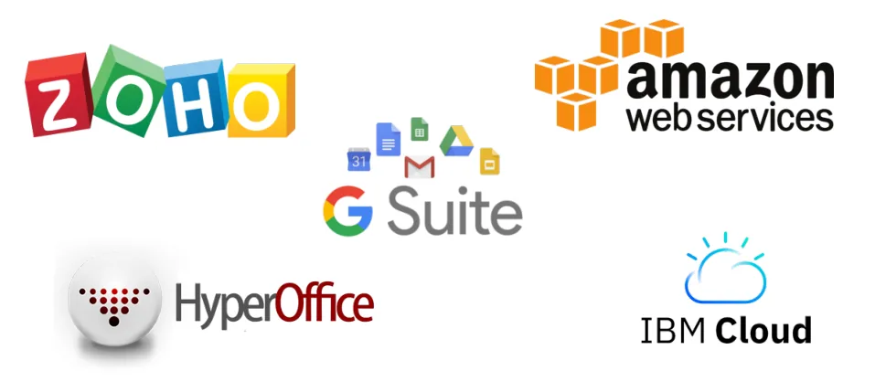
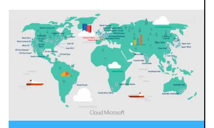
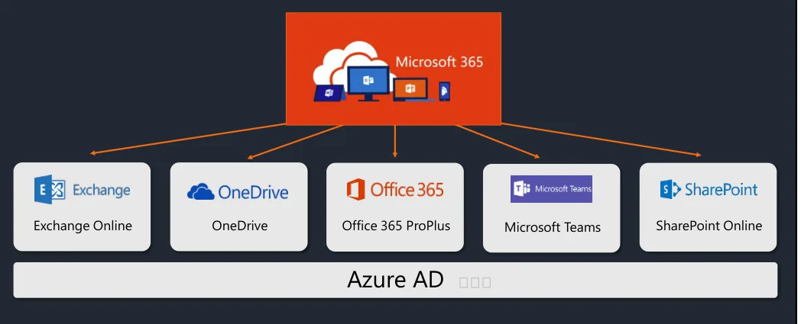
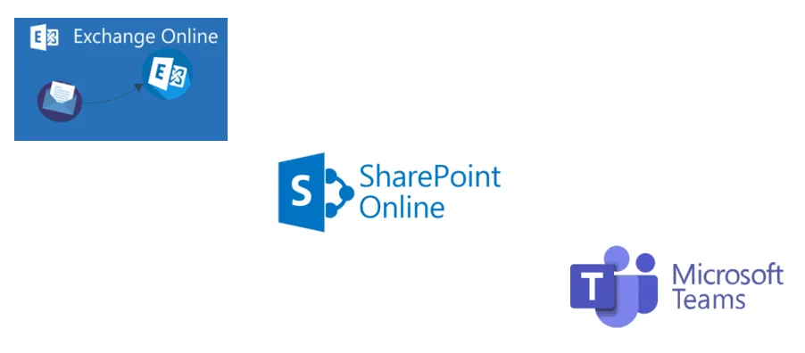
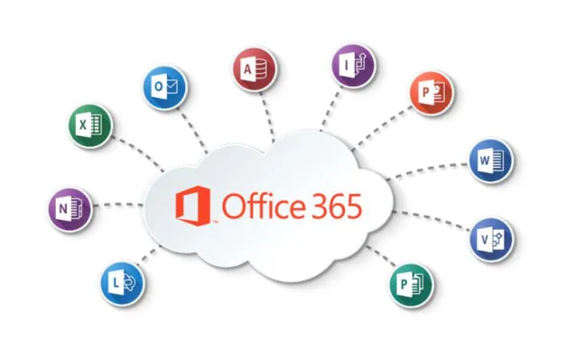
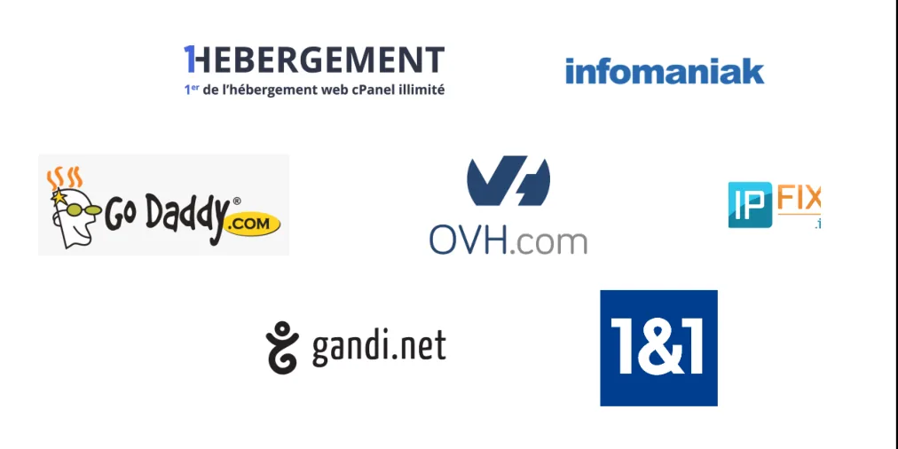
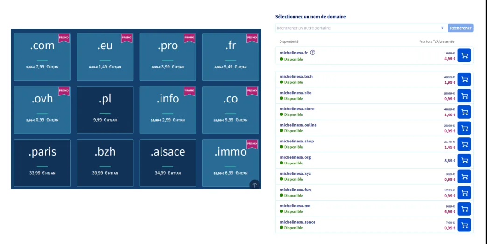

Découverte de Microsoft 365
SaaS
Software as a Service
Le Software as a Service ou logiciel en tant que service, est un modèle d'exploitation commerciale des logiciels dans lequel ceux-ci sont installés sur des serveurs distants plutôt que sur la machine de l'utilisateur. Les clients ne paient pas de licence d'utilisation pour une version, mais utilisent librement le service en ligne ou, plus généralement, payent un abonnement.
(Wikipédia)


| 75 M | 4 |
|---|---|
| d’utilisateurs actifs par jour fin mai 2020 | Datacenters en France |

Microsoft Office 365
| Famille | Plans |
|---|---|
| Particuliers | Famille Personnel Famille et étudiant |
| PME | Business Basic Business Standard Business Premium Apps for Business |
| Education | A1 A3 A5 |
| Association | Business Basic Pour les associations Business Standard Pour les associations E1 Pour les associations E3 Pour les associations E5 Pour les associations |
| Gouvernement | E1 Secteur public E3 Secteur public E5 Secteur public |
| Employés de terrain | F3 |
| Entreprise | Entreprise E3 Entreprise E5 Apps for Entreprise |


| Famille et plan | Tenant | Administrateur global |
|---|---|---|
| Microsoft Office 365 est disponible en famille (particulier, association, entreprise…) de plans (Business, E3 secteur public, E5 entreprise). | C’est l’ensemble des services de VOTRE abonnement dans Microsoft 365 associé à VOTRE domaine pour VOTRE entreprise. | C’est l’utilisateur qui a souscrit à l’abonnement Microsoft 365 et qui a les plus hauts privilèges sur tout votre Tenant. |
Exemple : famille, A1, E5, F3
Exemple : prénom.nomannée@campus-eni.fr
Exemple : nom et nombre de salariés
Exemple : admin@monentreprise.onmicrosoft.com
Terminez l’inscription

